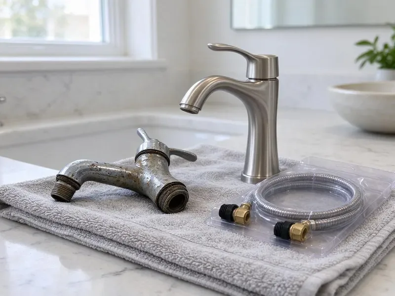

Well Pump Replacement in Fayetteville, AR
Get steady pressure back with well pump replacement in Fayetteville, AR, including new wire, drop pipe and pressure controls where needed.
- Submersible Pump Specialists
- Well Depth and Yield Checks
- Pump Hoist On the Truck
- Constant Pressure Options

Schedule Well Pump Replacement in Fayetteville, AR.
We carry common pump sizes and controls, so most jobs finish in one day.
Well Pump Replacement Across Fayetteville, AR
DGR Plumbing handles well pump replacement for homes and small businesses across Fayetteville, AR. Weak pressure, spitting faucets or a pump that never shuts off usually mean the pump is failing, which we can confirm in under an hour. Same-day replacement is common.
Work we handle every week:
- Constant pressure VFD systems for even flow
- Control box, capacitor and pressure switch replacement
- Two-Wire and Three-Wire Submersibles

Additional Plumbing Replacement Services in Fayetteville, AR
When repairs are no longer enough, our replacement services in Fayetteville, AR deliver modern, efficient equipment installed right.


Customers
Why Choose DGR Plumbing for Well Pump Replacement in Fayetteville, AR?
Pump sizing is where cheap jobs go wrong. A pump that is too big for the well's yield draws the water down to the intake and runs dry, and one that is too small never reaches cut-out pressure. The old label is not the spec.
- Proper Tools, We use powered pump hoists and proper clamps on deep wells.
- Lower Power Bills, A right-sized pump runs less and draws less power than an oversized one.
- Quality Pumps, We install pumps from makers with parts that are easy to get, so repairs stay simple.
Citywide Coverage
Every corner of Fayetteville and the rural roads around it are in our service area for well pump work and pressure tank work. Gravel lanes are fine. We bring a truck that can reach the well head.
Experienced Team
Licensed and trained on well systems specifically, our crew handles diagnosis and replacement in one visit when the parts are on the truck. Mistakes at depth are expensive. A dropped pump can mean a fishing job.
Safety-First Approach
Well pumps run on 230 volts, so the breaker gets locked out before anyone touches the control box or the well cap. Installs meet current Arkansas plumbing and electrical code. We ground the pump wire properly.
Trusted Certified Fayetteville Plumbing Services Professionals
At DGR Plumbing, we are proud to offer certified plumbing services throughout Fayetteville, AR. Credentials matter in this trade. Every repair, install and maintenance visit follows strict safety and quality rules, and the plumbers doing the work carry recognized industry credentials.
Call Us Now PHCC Plumbing Contractor Recognition
PHCC Plumbing Contractor Recognition Better Business Bureau (BBB) Accreditation
Better Business Bureau (BBB) Accreditation Angi Certified Pro
Angi Certified Pro ISO 9001 Quality Management Certification
ISO 9001 Quality Management CertificationWhat We Fix on Well Systems in Fayetteville, AR
Franklin Electric Well Pump Replacement in Fayetteville
Franklin Electric builds a large share of the submersible motors sold in the US, including ones sitting under other brands' pump ends. Replacement control boxes are easy to source. We match the motor and the wire gauge to the depth of your well.

Well Pump Electrical Troubleshooting in Fayetteville, AR
No-water calls often end at the control box, not the pump. On a three-wire submersible, the start capacitor or the relay in that box fails far more often than the motor down the well does. Those get tested first. Swapping a capacitor costs a fraction of pulling a pump.
No-Water Calls in Fayetteville
Pump trouble rarely gives notice. One morning the faucet coughs air and then nothing, and by then the motor has often been struggling for weeks. We test the control box and pressure switch before pulling anything.
Well Pressure Tank Replacement in Fayetteville
A waterlogged pressure tank makes a healthy pump look sick. If the pump clicks on every time someone runs a faucet for ten seconds, the bladder in the tank has probably failed and the pump is short cycling itself to death. A tire gauge on the air valve tells us a lot. Precharge should sit about 2 psi below the cut-in pressure.
Jet Pump Suction Line Repair in Fayetteville, AR
Foot valves and suction lines cause most jet pump trouble, not the pump. Air sneaks in through a pinhole in the suction line, the pump loses prime and the seal burns up running dry. The suction line gets a pressure test. If the well is too deep for a jet pump, we will say so and quote a submersible.
Well Pump Brands We Install in Fayetteville, AR
Goulds, Grundfos, Franklin Electric and Sta-Rite cover nearly every well pump we install. Each brand has strengths, and we choose based on your well. Parts for Goulds and Franklin are easy to get, which matters when a control box dies on a weekend.
Control Box and Pressure Switch Replacement in Fayetteville, AR
Not every dry faucet means a dead pump. A pressure switch with pitted contacts or a plugged sensing tube can stop the pump even though nothing is wrong down the well. A new switch runs about $30 in parts. You get to see the old part.

What a Well Pump Job Costs in Fayetteville, AR
A well pump job usually runs a few thousand dollars, and the pump itself is often less than half of that. The rest is labor, wire, pipe and fittings, plus the hoist time to get it all down the hole. Every line is on the quote.
Well Pump Replacement Near Me in Fayetteville, AR
Long gravel driveways and well heads out past the barn are normal for us. We cover the rural areas around the city, not just the subdivisions with paved streets and short water laterals to the house. Morning calls usually get same-day service.
Distance matters when the faucets are dry. DGR Plumbing has techs based around Fayetteville, AR who can usually reach a no-water call the same day, with the hoist and common pumps already loaded. We also know the local permit office.
DGR Plumbing at a Glance
- Licensed and insured plumbers serving Fayetteville, AR
- 24/7 emergency service with same-day scheduling
- Upfront, flat-rate pricing before work begins
- 4.8-star rated by 871+ Arkansas customers
Fayetteville Map
Fayetteville Information
- Population
- 101,680
- Area codes
- 479/870/501
- Service area
- Fayetteville and communities within 40 miles
- Nearby
- Springdale, Rogers, Bentonville, Bella Vista
Well depth and changing water levels decide what pump goes in on homes in Fayetteville, AR.
Expert Services
Reach out to DGR Plumbing for honest, reliable plumbing from people who know the trade in Fayetteville, AR.
Our Specialized Plumbing Services in Fayetteville, AR
At DGR Plumbing, you get every kind of plumbing service from one company across Fayetteville, AR. From leak detection to full system installs, our team works fast and charges fair prices on homes and commercial properties alike. Here are the core services we offer:


How a Well Pump Replacement Goes in Fayetteville, AR
DGR Plumbing keeps the routine simple, from the first test to the final pressure check.
Call or Book
Call (501) 251-9708 to set up a visit. Tell us what the faucets and pressure gauge are doing so we load the right parts.
Test the System
A licensed plumber visits your Fayetteville property and tests the pump, tank and controls to confirm what failed.
Pick the Pump
We recommend a pump sized to your well and your water use and give you a written estimate for the whole job.
Frequently Asked Questions About Well Pump Replacement in Fayetteville
Most well pump replacements in Fayetteville, AR land between $1,500 and $5,000. Depth and horsepower drive most of the price, along with any new tank or wire the job needs. You get it in writing first.
Usually one day. Deep wells or added repairs can take longer.
Shallow well pumps, usually jet pumps, sit above ground and pull water by suction from about 25 feet or less. Submersibles go down in the water and push it to the surface. Suction cannot lift much past 25 feet.
Requirements vary across Arkansas, and some counties want a well or plumbing permit for pump work. If the county requires it, we file the permit and book the inspection, which puts the work on record. No extra trips for you.
Permit rules vary by county. We follow the local rules for well work.
A typical swap fills most of a working day. Each length of drop pipe has to come up and go back down, so depth drives the clock. You get a time estimate up front.
Plenty of handy homeowners can swap a pressure switch, but a pump pull is a different job. Doing it right takes a hoist, a second person and the meters to test the motor and wire before it goes back down. Most people hire it out.
Often, yes. A tank as old as the pump is near the end too, and swapping both at once saves labor and spares the new motor from short cycling. We check the bladder first.
What People Are Saying About Our Plumbing Experts?

Robert G.
The camera showed a full break in our clay sewer line near the street. DGR Plumbing replaced it with a trenchless pipe burst, so the only digging was two small pits in the yard. They let us watch the footage before and after.
Sewer Line Replacement · Fort Smith, AR
Sofia M.
Two new toilets went in during one visit. The tech set them on new wax rings and swapped the old supply lines. He also noticed our bathroom faucet dripping and replaced the cartridge while he was there. No mess left behind.
Toilet Installation · Rogers, ARKevin O.
Before buying our house I paid for a sewer camera inspection. DGR Plumbing found a belly in the line that held standing water about forty feet from the cleanout. We used the video to get the sellers to fix it before closing.
Sewer Camera Inspection · Fort Smith, AR
Greg S.
I manage a small strip center with six tenants. DGR Plumbing handles our annual backflow testing and fixed a recurring clog in the shared sewer line that had been backing into the nail salon. Their reports come in clean and on time.
Commercial Plumbing · Rogers, AR
Diane F.
My kitchen faucet had dripped for months and I finally got tired of hearing it at night. DGR Plumbing came out the next morning, replaced the cartridge and the O rings, and tightened a loose base that was letting water under the sink.
Faucet Repair · Conway, ARMonica A.
Our water bill nearly doubled in one month with no change in how we used water. The tech checked the meter, heard the leak under the hallway with his equipment, and opened a hole about a foot square. Fixed the same day.
Slab Leak Repair · Conway, AR